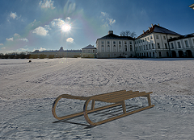
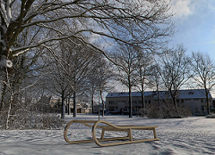

Estimated time to complete: 3–5 minutes
In this activity, you will apply a visualization scene with a 3D dome background to a sled assembly and then edit the scene to tailor the 3D background.
|
 |
 |
Open the Create and modify a scene with a 3D dome background activity.